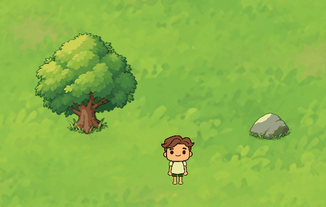
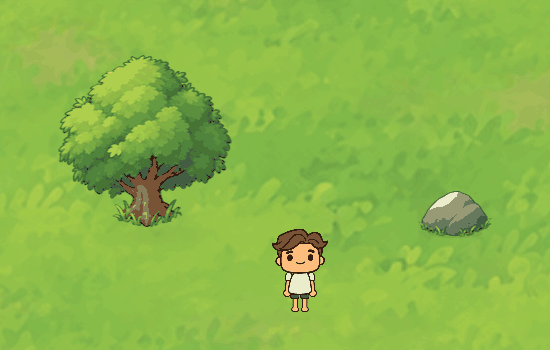
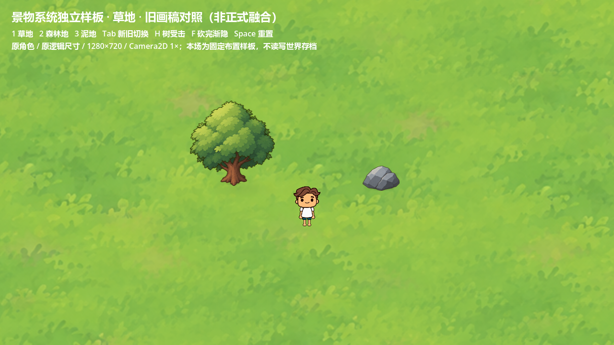
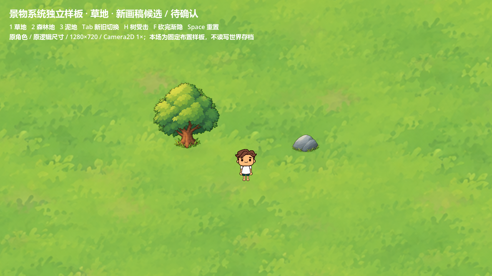
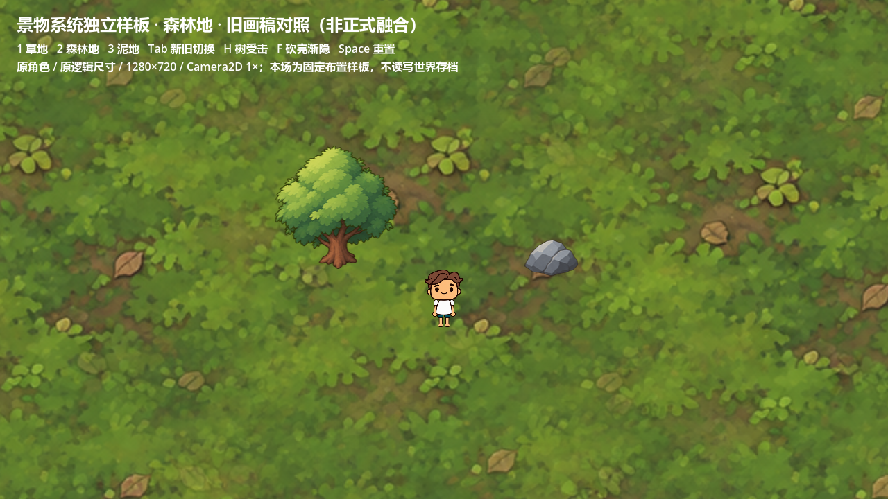
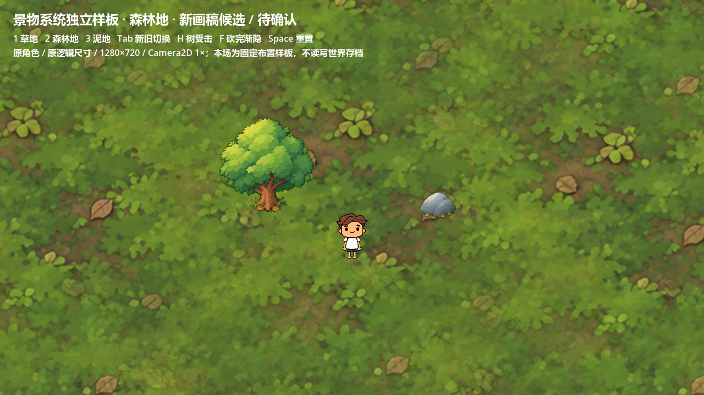
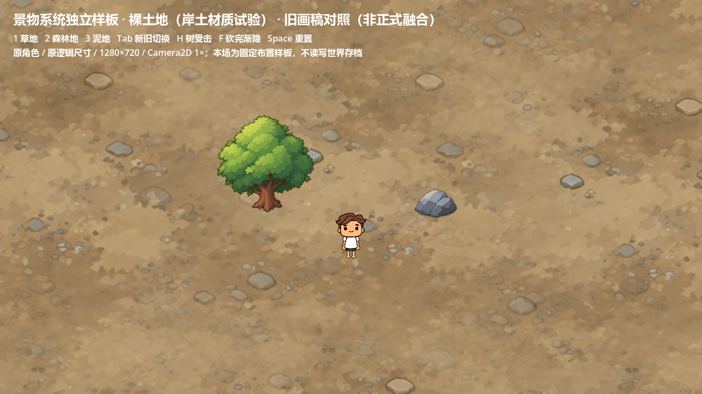
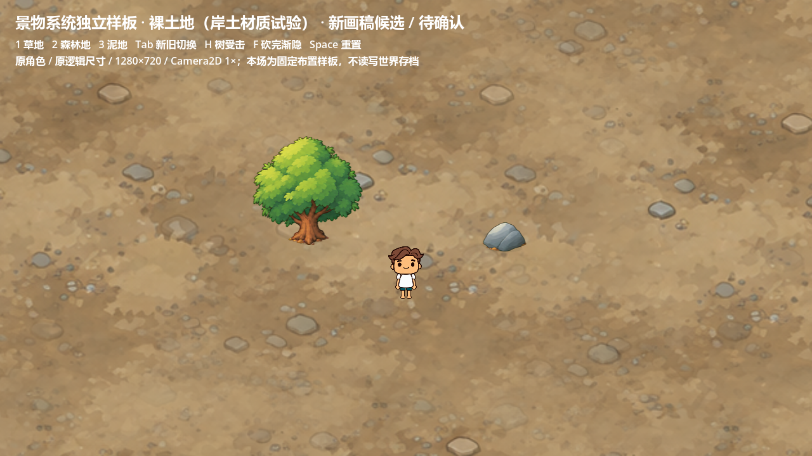

独立候选 · 待用户确认 · 未接入正式地图树根衔接与受击回弹
根据最新范围：专注根部与地表连接、树受击、砍完原地渐隐。无倒树动作、无树桩。三组真实 Godot 截图使用原角色、原地表 Shader、原逻辑画布及1280×720 / Camera2D 1×；固定布置样板，不读写世界存档。石头只作静态接地参照。
交互演示

受击与回弹：根部固定，中上部逐渐增强；原始画面局部裁切，未放大。约0.50秒纯晃动，无闪白，末帧停留。
砍完：0.3秒原地渐隐，根部覆盖与冠影一起消失，无旋转、无树桩。末帧停留。H受击，F模拟砍完渐隐，空格重置；1/2/3切地表，Tab切旧/新画稿。运行本地Godot样板（浏览器可能下载脚本，请在项目文件夹双击）。
草地

旧 view_v01 画稿（未复现正式取色融合）
新候选 · 对应地表接触结构森林地

旧 view_v01 画稿（未复现正式取色融合）
新候选 · 对应地表接触结构裸土地 · 使用原岸土画稿

旧 view_v01 画稿（未复现正式取色融合）
新候选 · 对应地表接触结构结构与检查结果
- 地表 → 独立柔冠影 → 按脚底Y排序的主体与角色。树内主体网格 → 固定根/草接触片；无独立绿色底座。
- 树主体225顶点、384三角形，底部24世界单位固定，切片重叠1单位。变形权重从根部0逐渐增长，冠顶最大横移5单位，回弹归零；不是整树节点转动。
- 沿用原树脚底碰撞，受击不变动。静止无每树持续_process，渐隐同时清理整树和阴影。
- 4.7.2-stable (official) / NVIDIA GeForce RTX 5060，150项专项，失败0。固定根部画面区域20/20帧逐像素相同。运行检查 / 像素证据 / 日志。
- 两对象小场景120FPS上限下，120帧静止帧间隔中位数8.335ms，P95 8.368ms。此值包含限帧等待，只证明本机样板未出现明显帧间隔异常，不代表正式密集森林或GPU开销。
实际检查发现
正式chunk_stream.chop_tree通过旋转整个tree节点反馈，根部与覆盖一起运动；原grounded_prop覆盖来自取地面色的程序多边形，缺真实草叶交错。原生成器已有生态密度、水域排除及通道净空，但无独立地表语义；每个景物是一次整图绘制，不能独立控制主体与接触。
本轮新画稿直接绘制草叶/落叶/土唇，按接触高度拆为静止下段与渐进变形主体。正式V0.6生成器、分块流、主角移动与动画、E键和采集收益保持。两Seed的独立surface_policy草案工作器复现已验证；它未推广、没有改变正式资源分布。
来源与QA
受控 generate2dsprite → route_media → local:codex-cli。回执模型codex-image_gen，精确后端未知；本地订阅额度，记录估算USD0，不代表没有额度消耗。初稿、定向修订、参考哈希、完整回执和整理参数均保留。未下载外部素材。
当前take-02去色后opaque_key_px=0、outer_ring_spill_fraction=0；数值不替代视觉验收。原画留白有以下警告，未跨格/裁断；最终候选与初稿均如实保留：
WARN safe_frame value=5 threshold=0 file=prototypes\environment-v01\art\spill-01\sheet-qc.json
WARN safe_frame value=4 threshold=0 file=prototypes\environment-v01\art\spill-02\sheet-qc.json
来源/哈希/全部QA · 等比整理与原点记录 · 景物规范草案 · 运行和范围说明
待确认与限制
- 需要确认新树石与角色的视角、草叶覆盖量、林下叶片色及泥地接触是否自然；所有新画稿仍pending_user。
- 裸土复用shore画稿，偏砂石；未生产专门泥地、裸岩或雪地接触素材。新石头比旧画稿更扁，仍需视觉选择。
- 目前只做一个树形/石形的三地表样板，未批量推广第二树种/石种。
- 旧图对照是画稿比较，不是正式第二版接地Shader的完整画面对比。当前候选未验证正式密林冠后淡化、真实分块重载及跨块间距，因此没有全地图接入结论。
- 没有新增音效/落叶木屑粒子、石头采集或玩法；生态策略仅草案，待本轮视觉确认后另行处理。已取消的倒树/树桩只保留来源归档，不在运行资源和本报告展示。
本轮到此停止，等待对根部衔接和受击观感的确认。